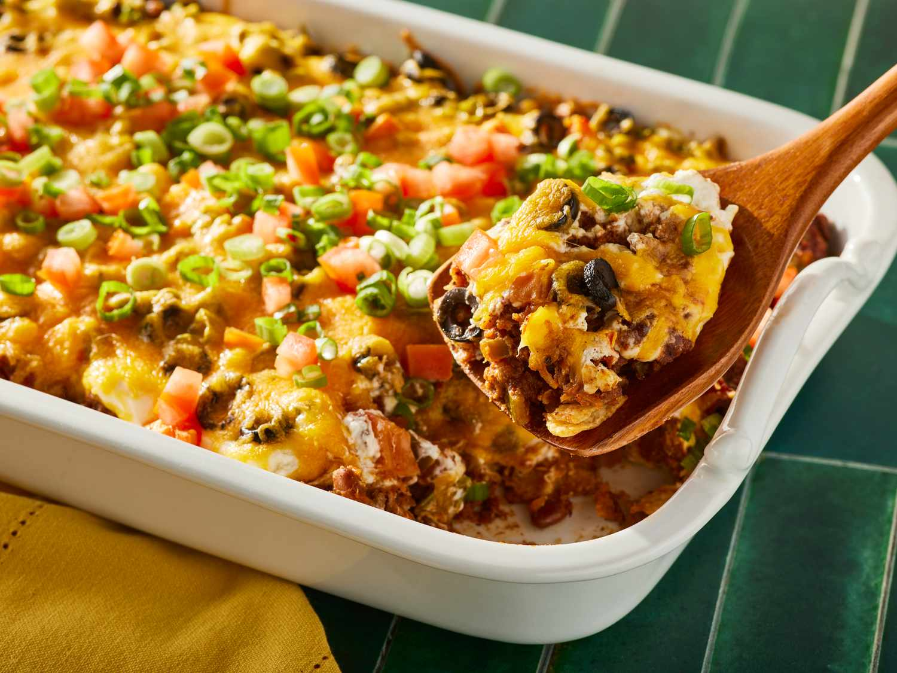
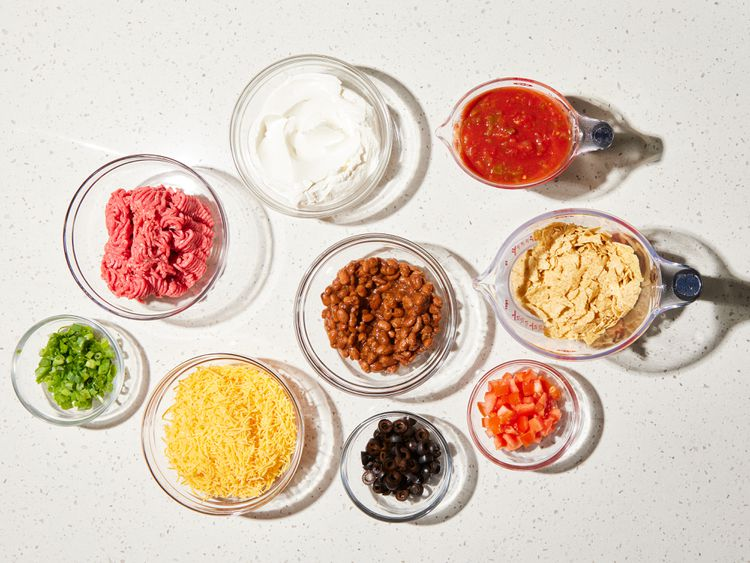
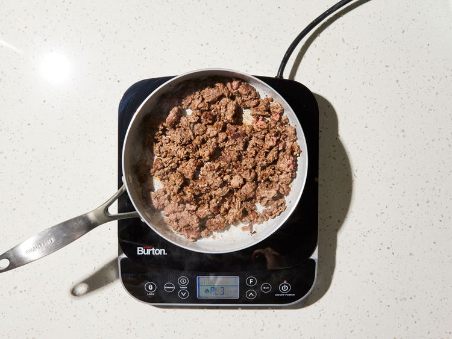
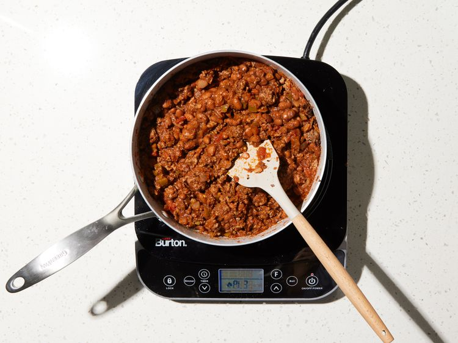
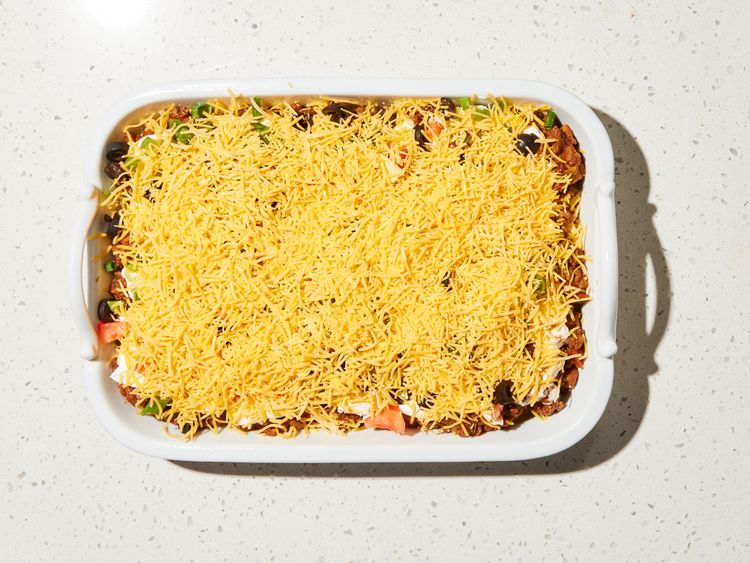
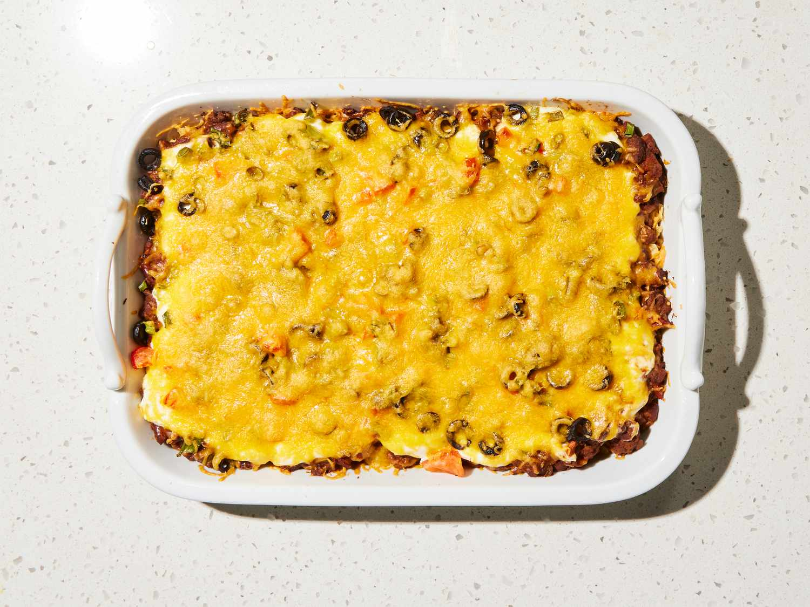

BestTaco Casserole

World's Best Lasagna
This taco casserole with ground beef and tortilla chips is easy to make and very tasty. I often substitute with ground turkey and low-fat dairy products, and it's still delicious! Serve this casserole with chips, salsa, and green salad.
Submited by | Updated on March 26, 2026
Ingredients
-
1 pound lean ground beef
-
2 cups salsa
-
1 (16 ounce) can chili beans, drained
-
3 cups tortilla chips, crushed
-
2 cups sour cream
-
1 (2 ounce) can sliced black olives, drained
-
½ cup chopped green onion
-
½ cup chopped fresh tomato
-
2 cups shredded Cheddar cheese
Steps
-
Step 1
Gather all ingredients.

Dotdash Meredith Food Studios -
Step 2
Preheat the oven to 350 degrees F (175 degrees C). Spray a 9x13-baking dish with cooking spray.
-
Step 3
Heat a large skillet over medium-high heat. Cook and stir ground beef in the hot skillet until browned and crumbly, 8 to 10 minutes.

Dotdash Meredith Food Studios -
Step 4
Stir in salsa, reduce heat, and simmer until liquid is absorbed, about 20 minutes. Stir in beans; cook until heated through.

Dotdash Meredith Food Studios -
Step 5
Spread crushed tortilla chips over the bottom of the baking dish; spoon beef mixture on top. Spread sour cream over beef, then sprinkle olives, green onions, and tomatoes on top. Cover with Cheddar cheese.

Dotdash Meredith Food Studios -
Step 6
Bake in the preheated oven until hot and bubbly, about 30 minutes.

Dotdash Meredith Food Studios -
Step 7
Serve and enjoy!
Dotdash Meredith Food Studios